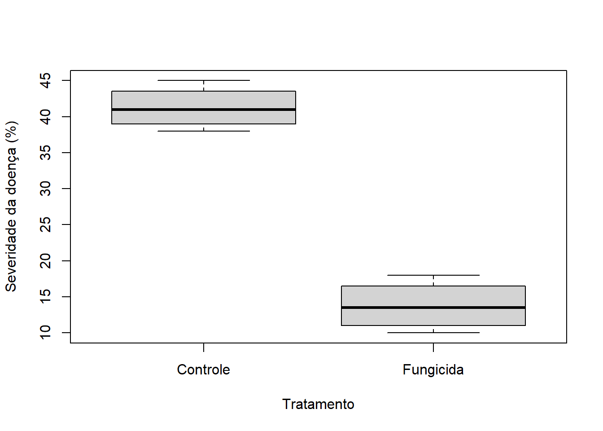

2 + 2[1] 4sqrt(16)[1] 4Primeiro encontro da disciplina
Disciplina FIP 606
Esta primeira aula foi planejada para ser leve, participativa e orientada por discussão, com foco em um experimento simples, introdução ao RStudio e uso da IA como assistente crítico, não como substituta do raciocínio científico.
Esta aula apresenta os fundamentos da disciplina e introduz os estudantes à análise de dados experimentais utilizando R. A proposta pedagógica prioriza aprendizagem ativa, discussão em grupo e uso crítico de ferramentas computacionais, incluindo inteligência artificial como assistente analítico.
A lógica da aula segue o fluxo do raciocínio científico:
Nesta disciplina, o objetivo não é apenas aprender software ou memorizar comandos.
O objetivo é aprender a pensar cientificamente com dados.
Ao final da aula os estudantes deverão ser capazes de:
A aula está organizada em quatro períodos de 50 minutos:
A aula começa com um problema, não com uma definição.
Primeiro os estudantes observam, discutem e levantam hipóteses.
Depois os conceitos são organizados.
Só então entram as ferramentas computacionais.
Experimento em casa de vegetação: efeito do fungicida na severidade da doença
| Planta | Tratamento | Severidade da doença (%) |
|---|---|---|
| 1 | Controle | 42 |
| 2 | Controle | 38 |
| 3 | Controle | 45 |
| 4 | Controle | 40 |
| 5 | Fungicida | 12 |
| 6 | Fungicida | 18 |
| 7 | Fungicida | 15 |
| 8 | Fungicida | 10 |
O que aconteceria se apenas uma planta fosse avaliada por tratamento?
Criar engajamento, colocar os estudantes para pensar cientificamente e gerar a necessidade da disciplina.
A aula começa com a seguinte mensagem:
Nesta disciplina o objetivo não é apenas aprender software ou memorizar comandos.
O objetivo é aprender a pensar cientificamente com dados.
Em seguida é apresentado um pequeno experimento.
Os estudantes recebem a tabela e discutem as perguntas por aproximadamente 5 a 7 minutos.
O professor circula pela sala observando as discussões.
Ouvir mais do que explicar.
O objetivo é fazer os conceitos emergirem da discussão dos alunos.
Perguntas orientadoras:
Termos que emergem são registrados no quadro.
Mensagem principal:
Perguntas simples como esta são o ponto de partida da análise de dados em pesquisa científica.
Transformar a discussão inicial em vocabulário comum da disciplina.
Durante a discussão coletiva são organizados os seguintes conceitos.
Um estudo planejado utilizado para responder a uma pergunta científica.
Uma condição aplicada às unidades experimentais.
Tratamento de referência utilizado para comparação.
Uma característica mensurável.
Proporção de tecido vegetal afetado pela doença.
Observações repetidas dentro de um tratamento.
Diferenças naturais entre as observações.
Observações registradas coletadas em um estudo.
Explicação proposta avaliada utilizando dados.
Monte o glossário no quadro, com participação dos alunos, antes de mostrar qualquer definição pronta.
A disciplina seguirá o seguinte fluxo analítico:
Os estudantes precisam perceber desde a primeira aula que a análise de dados não começa no software.
Ela começa com uma pergunta científica bem formulada.
A IA pode atuar como assistente para:
Entretanto:
A IA pode ajudar a escrever código, mas não substitui o raciocínio científico.
Abrir o RStudio e fazer a primeira análise real da tabela.
Apresentação rápida da interface:
Mensagem ao estudante:
O objetivo hoje não é dominar o software, mas perder o medo dele.
Mostre a diferença entre rodar um comando no console e registrar uma análise em um script.
dados <- data.frame(
planta = 1:8,
tratamento = c("Controle","Controle","Controle","Controle",
"Fungicida","Fungicida","Fungicida","Fungicida"),
severidade = c(42,38,45,40,12,18,15,10)
)
dados planta tratamento severidade
1 1 Controle 42
2 2 Controle 38
3 3 Controle 45
4 4 Controle 40
5 5 Fungicida 12
6 6 Fungicida 18
7 7 Fungicida 15
8 8 Fungicida 10'data.frame': 8 obs. of 3 variables:
$ planta : int 1 2 3 4 5 6 7 8
$ tratamento: chr "Controle" "Controle" "Controle" "Controle" ...
$ severidade: num 42 38 45 40 12 18 15 10 planta tratamento severidade
Min. :1.00 Length:8 Min. :10.00
1st Qu.:2.75 Class :character 1st Qu.:14.25
Median :4.50 Mode :character Median :28.00
Mean :4.50 Mean :27.50
3rd Qu.:6.25 3rd Qu.:40.50
Max. :8.00 Max. :45.00 Fechar o ciclo da aula: observar a tabela, discutir, analisar no R e comparar com a IA.
boxplot(severidade ~ tratamento, data = dados,
ylab = "Severidade da doença (%)",
xlab = "Tratamento")
Prompt utilizado:
Aqui está um conjunto de dados de um experimento em casa de vegetação testando um fungicida.
Tratamento Severidade
Controle 42
Controle 38
Controle 45
Controle 40
Fungicida 12
Fungicida 18
Fungicida 15
Fungicida 10
Analise estes dados, resuma os resultados, sugira uma abordagem estatística apropriada e forneça o código em R.Primeiro o raciocínio humano, depois a ferramenta.
A IA entra no final da aula como comparação, não como ponto de partida.
Pergunta inicial da aula:
O fungicida reduziu a severidade da doença?
Durante a aula os estudantes responderam essa pergunta por diferentes caminhos:
A análise científica não é apenas executar código, mas compreender experimentos, interpretar dados e comunicar resultados de forma rigorosa.
Ao final do primeiro dia, os estudantes terão: